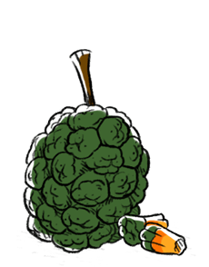

pandanus fruit
The fruit of the pandanus tectorius tree is widely consumed in the pacific islands, but it goes under other names, like hala, screwpine or pu hala. The fruits are large, and composed of 40-80 wedge-like phalanges (or keys). The fruit changes from green to orange/red as it matures, and can stay on the tree for more than 12 months. The fruit is eaten raw or cooked, and is a source of vitamin A.
Pandanus are a source of food, but they're also used to produce material for clothing, basket and weaving and shelters. Pandanus trees are super trees, they can withstand difficult conditions (storms, sea air, drought) and propagate with ease. The phalanges covering the inner core are buoyant, so like coconuts they can be transported for many months by ocean currents while remaining viable.